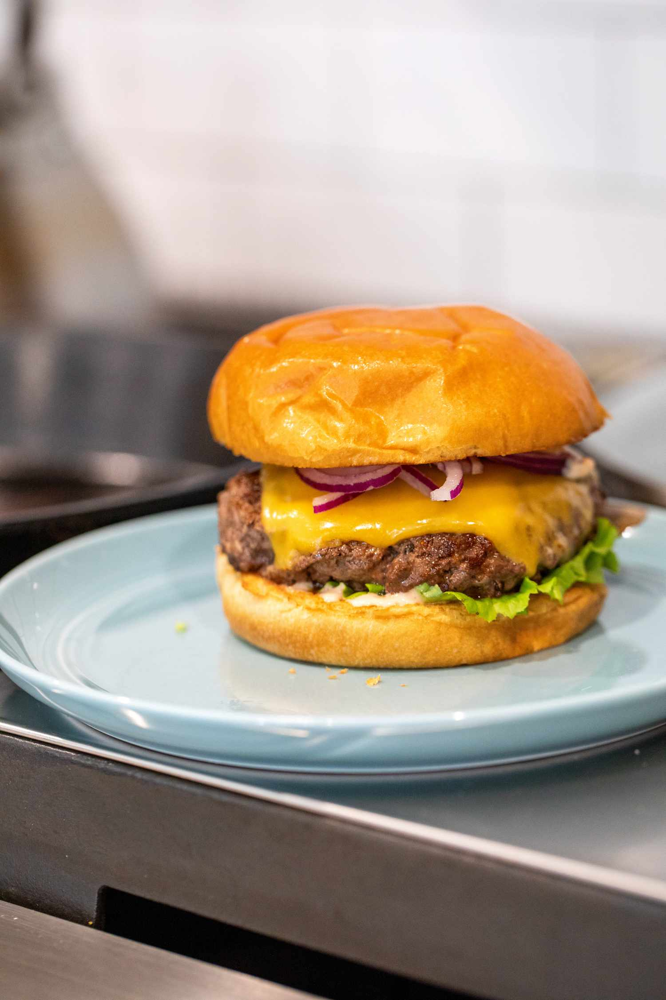

Burger

This is a recipe on how to make a burger. It shows the ingredients needed and how to use them.
Ingredients
- 1 tbsp salt
- 1 tbsp black pepper
- 1 tsp garlic powder
- 1/4 cup mayonnaise
1 tbsp Dijon mustard
- 1 tbsp ketchup
- 1 lb ground beef
- 1 potato or brioche buns
- Slices of American or any other cheese
- Lettuce leaves
- Thinly sliced onion
- Thinly sliced tomato
Instructions
- Prepare seasoning mix in small bowl,mix together salt, pepper and garlic powder.
- In another bowl, mix together mayonnaise,mustard and ketchup till smooth.
- Preheat a large skillet over medium heat. Loosely divide ground beef into 1/3 lb patties. Shappy in discs and 1/2 inch thick. Season the patties with 1/2 teaspon of previously prepared seaosing mix one each side of patty.
- Spray skillet with non-stick spray. Place patties in the skillet and press down on each with spatula for ten seconds.Cook for 4 minutes.
- Flip the patties and cook for another 3 minutes. Add cheese on top of patties.
- Build the burgers, by placing patties on buns, and putting on lettuce, onions and tomatoes on top if wanted.